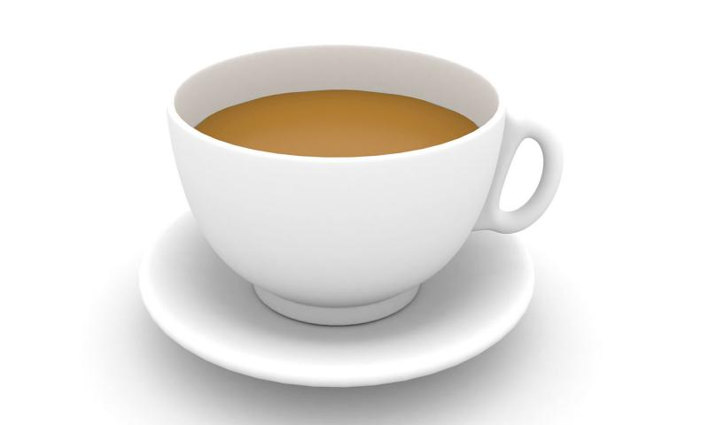

DELICIOUS TEA
Tea Stuff
- water.
- tea bags
- sugar.
- milk.
Method
- Add 1 cup/200 mL of freshly boiled water to your tea bag (in a mug).
- Allow the tea bag to brew for 2 minutes.
- Remove the tea bag.
- Add 10 mL of milk.
- Add one spoon sugar.
- Shake with spoon.
Your delicious tea is raedy.